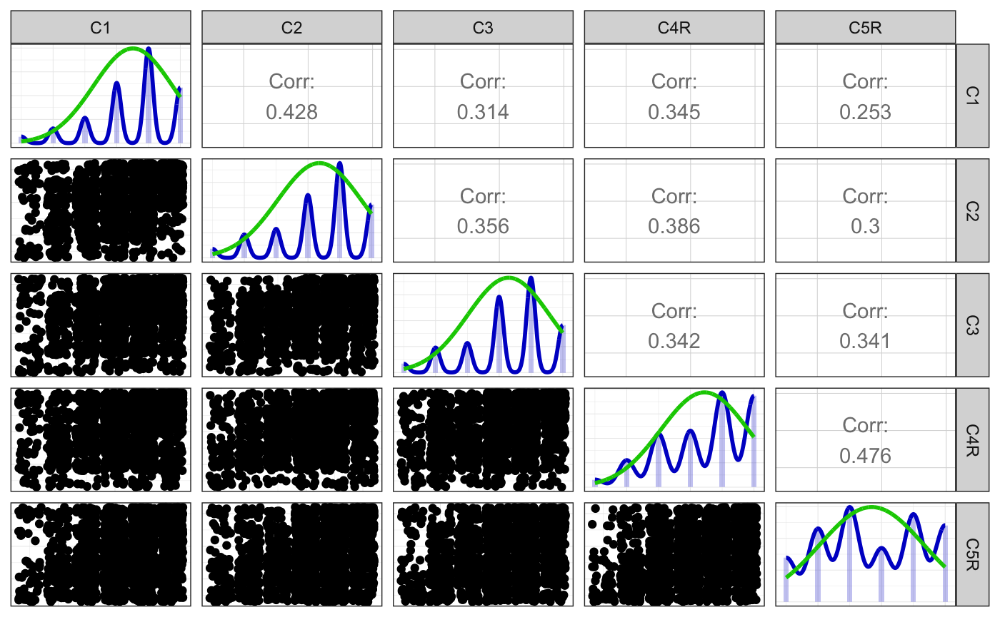
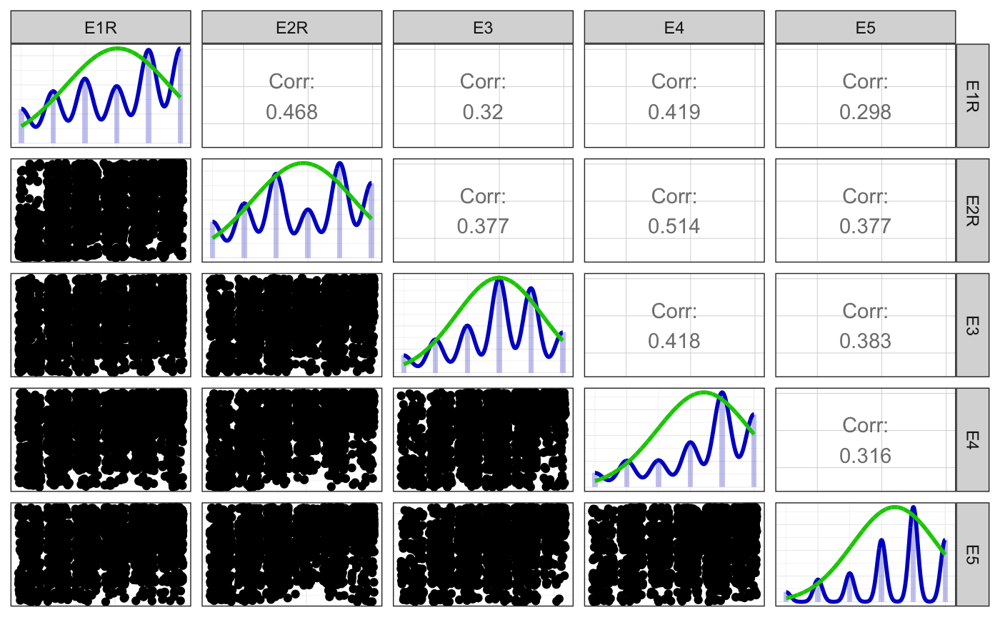
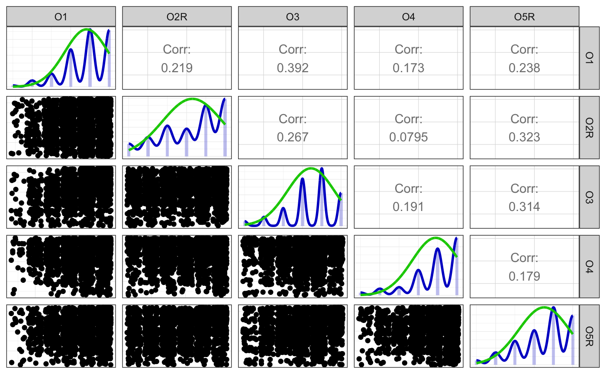
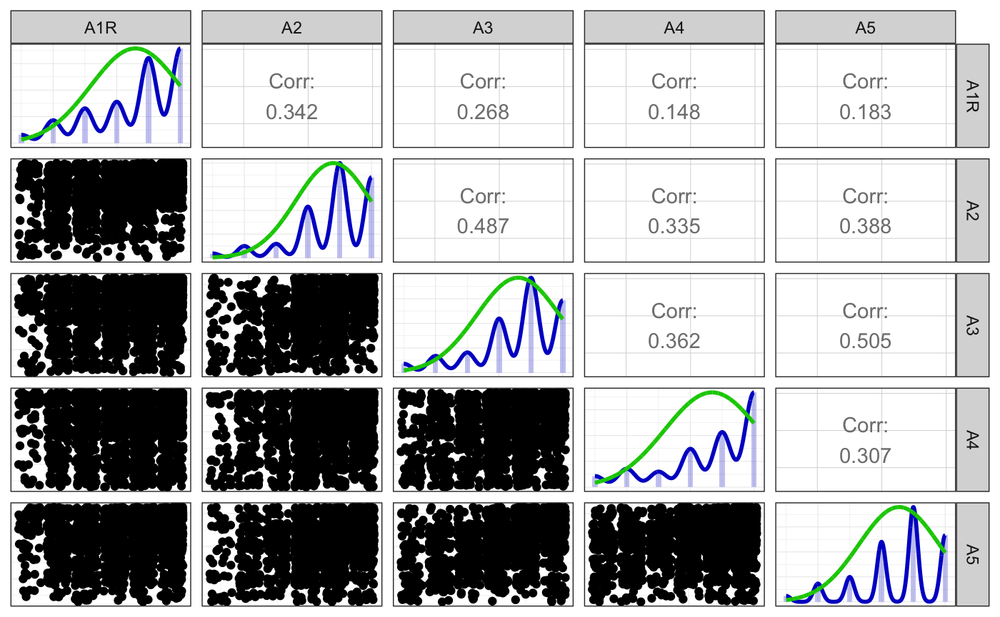
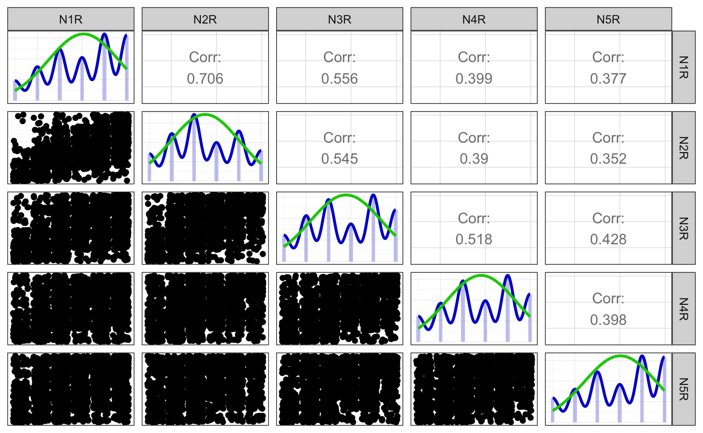

Codebook example with manual labelling
Ruben Arslan
2019-02-19
Source:vignettes/codebook_labelled_manual.Rmd
codebook_labelled_manual.RmdIn this vignette, you can see how to add metadata to a dataset when it isn’t already stored in its attributes. For this example, we’ll use the bfi and bfi.dictionary datasets from the psych package. We use functions from the labelled package to set the relevant attributes with convenience functions.
knit_by_pkgdown <- !is.null(knitr::opts_chunk$get("fig.retina"))
library(dplyr)
library(codebook)
library(labelled)
pander::panderOptions("table.split.table", Inf)
ggplot2::theme_set(ggplot2::theme_bw())
data("bfi", package = 'psych')
bfi <- bfi %>% tbl_df()
data("bfi.dictionary", package = 'psych')
bfi.dictionary <- tibble::rownames_to_column(bfi.dictionary, "variable") %>%
tbl_df()Let’s start by getting an overview of our dataset
## # A tibble: 20 x 28
## A1 A2 A3 A4 A5 C1 C2 C3 C4 C5 E1 E2
## <int> <int> <int> <int> <int> <int> <int> <int> <int> <int> <int> <int>
## 1 2 4 3 4 4 2 3 3 4 4 3 3
## 2 2 4 5 2 5 5 4 4 3 4 1 1
## 3 5 4 5 4 4 4 5 4 2 5 2 4
## 4 4 4 6 5 5 4 4 3 5 5 5 3
## 5 2 3 3 4 5 4 4 5 3 2 2 2
## 6 6 6 5 6 5 6 6 6 1 3 2 1
## 7 2 5 5 3 5 5 4 4 2 3 4 3
## 8 4 3 1 5 1 3 2 4 2 4 3 6
## 9 4 3 6 3 3 6 6 3 4 5 5 3
## 10 2 5 6 6 5 6 5 6 2 1 2 2
## 11 4 4 5 6 5 4 3 5 3 2 1 3
## 12 2 5 5 5 5 5 4 5 4 5 3 3
## 13 5 5 5 6 4 5 4 3 2 2 3 3
## 14 5 5 5 6 6 4 4 4 2 1 2 2
## 15 4 5 2 2 1 5 5 5 2 2 3 4
## 16 4 3 6 6 3 5 5 5 3 5 1 1
## 17 4 6 6 2 5 4 4 4 4 4 1 2
## 18 5 5 5 4 5 5 5 5 4 3 2 2
## 19 4 4 5 4 3 5 4 5 4 6 1 2
## 20 4 4 6 5 5 1 1 1 5 6 1 1
## # … with 16 more variables: E3 <int>, E4 <int>, E5 <int>, N1 <int>,
## # N2 <int>, N3 <int>, N4 <int>, N5 <int>, O1 <int>, O2 <int>, O3 <int>,
## # O4 <int>, O5 <int>, gender <int>, education <int>, age <int>and our data dictionary.
## # A tibble: 28 x 8
## variable ItemLabel Item Giant3 Big6 Little12 Keying IPIP100
## <chr> <fct> <fct> <fct> <fct> <fct> <int> <fct>
## 1 A1 q_146 Am indiffer… Cohesi… Agreea… Compassi… -1 B5:A
## 2 A2 q_1162 Inquire abo… Cohesi… Agreea… Compassi… 1 B5:A
## 3 A3 q_1206 Know how to… Cohesi… Agreea… Compassi… 1 B5:A
## 4 A4 q_1364 Love childr… Cohesi… Agreea… Compassi… 1 B5:A
## 5 A5 q_1419 Make people… Cohesi… Agreea… Compassi… 1 B5:A
## 6 C1 q_124 Am exacting… Stabil… Consci… Orderlin… 1 B5:C
## 7 C2 q_530 Continue un… Stabil… Consci… Orderlin… 1 B5:C
## 8 C3 q_619 Do things a… Stabil… Consci… Orderlin… 1 B5:C
## 9 C4 q_626 Do things i… Stabil… Consci… Industri… -1 B5:C
## 10 C5 q_1949 Waste my ti… Stabil… Consci… Industri… -1 B5:C
## # … with 18 more rowsHow to add variable and value labels
Using the var_label function from the labelled package, we can easily assign a label to a variable (or a list of labels to a dataset).
# First, let's see what we know about these variables.
bfi <- bfi %>% # here we use the pipe (feeding the bfi argument into the pipe)
mutate(education = as.double(education), # the labelled class is a bit picky and doesn't like integers
gender = as.double(gender))
bfi.dictionary %>% tail(3)## # A tibble: 3 x 8
## variable ItemLabel Item Giant3 Big6 Little12 Keying IPIP100
## <chr> <fct> <fct> <fct> <fct> <fct> <int> <fct>
## 1 gender gender males=1, female… <NA> <NA> <NA> NA <NA>
## 2 education education in HS, fin HS, … <NA> <NA> <NA> NA <NA>
## 3 age age age in years <NA> <NA> <NA> NA <NA>## $label
## [1] "Self-reported gender"var_label(bfi) <- list(age = "age in years", education = "Highest degree")
# or using dplyr syntax
bfi <- bfi %>% set_variable_labels(
age = "age in years",
education = "Highest degree")Now, we saw that the value labels were encoded in the variable label. This is not what we want. Instead, we assign value labels.
bfi <- bfi %>%
add_value_labels(
gender = c("male" = 1, "female" = 2),
education = c("in high school" = 1, "finished high school" = 2,
"some college" = 3, "college graduate" = 4,
"graduate degree" = 5) # dont use abbreviations if you can avoid it
)
attributes(bfi$gender) # check what we're doing## $label
## [1] "Self-reported gender"
##
## $labels
## male female
## 1 2
##
## $class
## [1] "haven_labelled"# We could also assign the attributes manually, but then there's no error checking.
attributes(bfi$gender) <- list(
label = "Self-reported gender",
labels = c(male = 1L, female = 2L),
class = "haven_labelled")As we see, adding value labels turned the variable gender into a different type (from a simple integer to a labelled class).
This is all pretty tedious, and we have the data we need in a nice dictionary already. With a few easy steps, we can transform it.
First, we take only the personality items. We did the rest already.
dict <- bfi.dictionary %>%
filter(!variable %in% c("gender", "education", "age")) %>% # we did those already
mutate(label = paste0(Big6, ": ", Item)) %>% # make sure we name the construct in the label
select(variable, label, Keying)Now, we turn this data.frame with variable and label columns into a named list and assign it as variable labels.
Now, we want to assign value labels to all likert items. First, we need to define a named vector.
value_labels <- c("Very Inaccurate" = 1,
"Moderately Inaccurate" = 2,
"Slightly Inaccurate" = 3,
"Slightly Accurate" = 4,
"Moderately Accurate" = 5,
"Very Accurate" = 6)We’re going to be using these labels many times, so let’s put the step of assigning them into a function.
Now, for all personality items (we get them from our data dictionary), we assign these value labels.
personality_items <- dict %>% pull(variable)
bfi <- bfi %>%
mutate_at(personality_items,
add_likert_label)However, some of our items are reverse-coded. This information is contained in the Keying variable in our data dictionary. We’ll use it to rename the variables to end with the letter R.
# reverse underlying values for the reverse-keyed items
reverse_coded_items <- dict %>% filter(Keying == -1) %>% pull(variable)
bfi <- bfi %>%
rename_at(reverse_coded_items, add_R)Next, we can conveniently call the reverse_labelled_values function on all variables ending with a number and R.
## <Labelled integer>: Agreeableness: Am indifferent to the feelings of others.
## [1] 2 2 5
##
## Labels:
## value label
## 1 Very Inaccurate
## 2 Moderately Inaccurate
## 3 Slightly Inaccurate
## 4 Slightly Accurate
## 5 Moderately Accurate
## 6 Very Accurate## Very Inaccurate Moderately Inaccurate Slightly Inaccurate
## 1 2 3
## Slightly Accurate Moderately Accurate Very Accurate
## 4 5 6bfi <- bfi %>%
mutate_at(
vars(matches("[0-9]_?R$")), # only for variables that end in 1R 2_R 3R etc
reverse_labelled_values)
labelled::val_labels(bfi$A1R)## Very Inaccurate Moderately Inaccurate Slightly Inaccurate
## 6 5 4
## Slightly Accurate Moderately Accurate Very Accurate
## 3 2 1## <Labelled double>: Agreeableness: Am indifferent to the feelings of others.
## [1] 5 5 2
##
## Labels:
## value label
## 6 Very Inaccurate
## 5 Moderately Inaccurate
## 4 Slightly Inaccurate
## 3 Slightly Accurate
## 2 Moderately Accurate
## 1 Very AccurateAs you can see, the underlying numeric values have changed, but the labels are still the way the participant answered them.
Aggregating scales
Now, we can form scale aggregates. The codebook function aggregate_and_document_scale does this for us and automatically sets the correct attributes. For some select calls her,e we have to set ignore.case to FALSE, or it would match the age and education variables.
bfi$consc <- aggregate_and_document_scale(bfi %>% select(starts_with("C")))
bfi$extra <- aggregate_and_document_scale(bfi %>% select(starts_with("E", ignore.case = F)))
bfi$open <- aggregate_and_document_scale(bfi %>% select(starts_with("O")))
bfi$agree <- aggregate_and_document_scale(bfi %>% select(starts_with("A", ignore.case = F)))
bfi$neuro <- aggregate_and_document_scale(bfi %>% select(starts_with("N")))Last, we can assign some metadata to the dataset itself. We might want to give it a meaningful name and description, for example.
metadata(bfi)$name <- "25 Personality items representing 5 factors"
metadata(bfi)$description <- "25 personality self report items taken from the International Personality Item Pool (ipip.ori.org) were included as part of the Synthetic Aperture Personality Assessment (SAPA) web based personality assessment project. The data from 2800 subjects are included here as a demonstration set for scale construction, factor analysis, and Item Response Theory analysis. Three additional demographic variables (sex, education, and age) are also included.
The first 25 items are organized by five putative factors: Agreeableness, Conscientiousness, Extraversion, Neuroticism, and Opennness. The item data were collected using a 6 point response scale: 1 Very Inaccurate 2 Moderately Inaccurate 3 Slightly Inaccurate 4 Slightly Accurate 5 Moderately Accurate 6 Very Accurate
To see an example of the data collection technique, visit https://SAPA-project.org or the International Cognitive Ability Resource at https://icar-project.com. The items given were sampled from the International Personality Item Pool of Lewis Goldberg using the sampling technique of SAPA. This is a sample data set taken from the much larger SAPA data bank."
metadata(bfi)$identifier <- "https://CRAN.R-project.org/package=psych"
metadata(bfi)$datePublished <- "2010-01-01"
metadata(bfi)$creator <- list(
"@type" = "Person",
givenName = "William", familyName = "Revelle",
email = "revelle@northwestern.edu",
affiliation = list("@type" = "Organization",
name = "Northwestern University"))
metadata(bfi)$citation <- "Revelle, W., Wilt, J., and Rosenthal, A. (2010) Individual Differences in Cognition: New Methods for examining the Personality-Cognition Link In Gruszka, A. and Matthews, G. and Szymura, B. (Eds.) Handbook of Individual Differences in Cognition: Attention, Memory and Executive Control, Springer."
metadata(bfi)$url <- "https://CRAN.R-project.org/package=psych"
metadata(bfi)$temporalCoverage <- "Spring 2010"
metadata(bfi)$spatialCoverage <- "Online" # We don't want to look at the code in the codebook.
knitr::opts_chunk$set(warning = TRUE, message = TRUE, echo = FALSE)Finally, we can generate our codebook.
Metadata
Description
Dataset name: 25 Personality items representing 5 factors
25 personality self report items taken from the International Personality Item Pool (ipip.ori.org) were included as part of the Synthetic Aperture Personality Assessment (SAPA) web based personality assessment project. The data from 2800 subjects are included here as a demonstration set for scale construction, factor analysis, and Item Response Theory analysis. Three additional demographic variables (sex, education, and age) are also included.
The first 25 items are organized by five putative factors: Agreeableness, Conscientiousness, Extraversion, Neuroticism, and Opennness. The item data were collected using a 6 point response scale: 1 Very Inaccurate 2 Moderately Inaccurate 3 Slightly Inaccurate 4 Slightly Accurate 5 Moderately Accurate 6 Very Accurate
To see an example of the data collection technique, visit https://SAPA-project.org or the International Cognitive Ability Resource at https://icar-project.com. The items given were sampled from the International Personality Item Pool of Lewis Goldberg using the sampling technique of SAPA. This is a sample data set taken from the much larger SAPA data bank.
Metadata for search engines
- Temporal Coverage: Spring 2010
- Spatial Coverage: Online
- Citation: Revelle, W., Wilt, J., and Rosenthal, A. (2010) Individual Differences in Cognition: New Methods for examining the Personality-Cognition Link In Gruszka, A. and Matthews, G. and Szymura, B. (Eds.) Handbook of Individual Differences in Cognition: Attention, Memory and Executive Control, Springer.
- URL: https://CRAN.R-project.org/package=psych
- Identifier: https://CRAN.R-project.org/package=psych
Date published: 2010-01-01
-
Creator:
- @type: Person
- givenName: William
- familyName: Revelle
- email: revelle@northwestern.edu
-
affiliation:
- @type: Organization
- name: Northwestern University
- keywords: A1R, A2, A3, A4, A5, C1, C2, C3, C4R, C5R, E1R, E2R, E3, E4, E5, N1R, N2R, N3R, N4R, N5R, O1, O2R, O3, O4, O5R, gender, education, age, consc, extra, open, agree and neuro
Variables
gender
Self-reported gender

education
Highest degree


Scale: consc


Reliability details
Reliability
Information about this analysis:
Observations: 2707
Positive correlations: 10 out of 10 (100%)
Estimates assuming interval level:
| Index | Estimate |
|---|---|
| Omega | 0.7330223 |
| Omega Psych Tot | 0.7710807 |
| Omega Psych H | 0.6184374 |
| Omega Ordinal | 0.7706569 |
| Cronbach Alpha | 0.7292772 |
| Greatest Lower Bound | 0.7661976 |
| Alpha Ordinal | 0.7695237 |
Scatter matrix

Detailed output
##
## Information about this analysis:
##
## Dataframe: res$dat
## Items: C1, C2, C3, C4R, C5R
## Observations: 2707
## Positive correlations: 10 out of 10 (100%)
##
## Estimates assuming interval level:
##
## Omega (total): 0.73
## Omega (hierarchical): 0.62
## Revelle's omega (total): 0.77
## Greatest Lower Bound (GLB): 0.77
## Coefficient H: 0.74
## Cronbach's alpha: 0.73
## Confidence intervals:
## Omega (total): [0.72, 0.75]
## Cronbach's alpha: [0.71, 0.75]
##
## Estimates assuming ordinal level:
##
## Ordinal Omega (total): 0.77
## Ordinal Omega (hierarch.): 0.77
## Ordinal Cronbach's alpha: 0.77
## Confidence intervals:
## Ordinal Omega (total): [0.76, 0.78]
## Ordinal Cronbach's alpha: [0.76, 0.78]
##
## Note: the normal point estimate and confidence interval for omega are based on the procedure suggested by Dunn, Baguley & Brunsden (2013) using the MBESS function ci.reliability, whereas the psych package point estimate was suggested in Revelle & Zinbarg (2008). See the help ('?scaleStructure') for more information.
##
## Eigen values: 2.42, 0.827, 0.682, 0.566, 0.504
## Loadings:
## PC1
## C1 0.666
## C2 0.715
## C3 0.669
## C4R 0.745
## C5R 0.680
##
## PC1
## SS loadings 2.420
## Proportion Var 0.484
##
## vars n mean sd median trimmed mad min max range skew kurtosis
## C1 1 2707 4.51 1.24 5 4.65 1.48 1 6 5 -0.86 0.32
## C2 2 2707 4.36 1.32 5 4.50 1.48 1 6 5 -0.74 -0.14
## C3 3 2707 4.30 1.29 5 4.41 1.48 1 6 5 -0.69 -0.12
## C4R 4 2707 4.45 1.37 5 4.59 1.48 1 6 5 -0.60 -0.62
## C5R 5 2707 3.69 1.63 4 3.74 1.48 1 6 5 -0.06 -1.22
## se
## C1 0.02
## C2 0.03
## C3 0.02
## C4R 0.03
## C5R 0.03Summary statistics
| name | label | data_type | value_labels | missing | complete | n | mean | sd | p0 | p25 | p50 | p75 | p100 | hist |
|---|---|---|---|---|---|---|---|---|---|---|---|---|---|---|
| C1 | Conscientiousness: Am exacting in my work. | integer | 1. Very Inaccurate, 2. Moderately Inaccurate, 3. Slightly Inaccurate, 4. Slightly Accurate, 5. Moderately Accurate, 6. Very Accurate |
21 | 2779 | 2800 | 4.5 | 1.24 | 1 | 4 | 5 | 5 | 6 | ▁▁▁▂▅▁▇▅ |
| C2 | Conscientiousness: Continue until everything is perfect. | integer | 1. Very Inaccurate, 2. Moderately Inaccurate, 3. Slightly Inaccurate, 4. Slightly Accurate, 5. Moderately Accurate, 6. Very Accurate |
24 | 2776 | 2800 | 4.37 | 1.32 | 1 | 4 | 5 | 5 | 6 | ▁▂▁▂▆▁▇▅ |
| C3 | Conscientiousness: Do things according to a plan. | integer | 1. Very Inaccurate, 2. Moderately Inaccurate, 3. Slightly Inaccurate, 4. Slightly Accurate, 5. Moderately Accurate, 6. Very Accurate |
20 | 2780 | 2800 | 4.3 | 1.29 | 1 | 4 | 5 | 5 | 6 | ▁▂▁▂▆▁▇▅ |
| C4R | Conscientiousness: Do things in a half-way manner. | numeric | 6. Very Inaccurate, 5. Moderately Inaccurate, 4. Slightly Inaccurate, 3. Slightly Accurate, 2. Moderately Accurate, 1. Very Accurate |
26 | 2774 | 2800 | 4.45 | 1.38 | 1 | 3 | 5 | 6 | 6 | ▁▂▁▅▅▁▇▇ |
| C5R | Conscientiousness: Waste my time. | numeric | 6. Very Inaccurate, 5. Moderately Inaccurate, 4. Slightly Inaccurate, 3. Slightly Accurate, 2. Moderately Accurate, 1. Very Accurate |
16 | 2784 | 2800 | 3.7 | 1.63 | 1 | 2 | 4 | 5 | 6 | ▃▆▁▇▅▁▇▆ |
Scale: extra


Reliability details
Reliability
Information about this analysis:
Observations: 2713
Positive correlations: 10 out of 10 (100%)
Estimates assuming interval level:
| Index | Estimate |
|---|---|
| Omega | 0.7673336 |
| Omega Psych Tot | 0.7950195 |
| Omega Psych H | 0.6522418 |
| Omega Ordinal | 0.7950197 |
| Cronbach Alpha | 0.7609326 |
| Greatest Lower Bound | 0.7977921 |
| Alpha Ordinal | 0.7928599 |
Scatter matrix

Detailed output
##
## Information about this analysis:
##
## Dataframe: res$dat
## Items: E1R, E2R, E3, E4, E5
## Observations: 2713
## Positive correlations: 10 out of 10 (100%)
##
## Estimates assuming interval level:
##
## Omega (total): 0.77
## Omega (hierarchical): 0.65
## Revelle's omega (total): 0.8
## Greatest Lower Bound (GLB): 0.8
## Coefficient H: 0.78
## Cronbach's alpha: 0.76
## Confidence intervals:
## Omega (total): [0.75, 0.78]
## Cronbach's alpha: [0.75, 0.78]
##
## Estimates assuming ordinal level:
##
## Ordinal Omega (total): 0.8
## Ordinal Omega (hierarch.): 0.79
## Ordinal Cronbach's alpha: 0.79
## Confidence intervals:
## Ordinal Omega (total): [0.78, 0.81]
## Ordinal Cronbach's alpha: [0.78, 0.81]
##
## Note: the normal point estimate and confidence interval for omega are based on the procedure suggested by Dunn, Baguley & Brunsden (2013) using the MBESS function ci.reliability, whereas the psych package point estimate was suggested in Revelle & Zinbarg (2008). See the help ('?scaleStructure') for more information.
##
## Eigen values: 2.565, 0.768, 0.643, 0.561, 0.464
## Loadings:
## PC1
## E1R 0.700
## E2R 0.780
## E3 0.691
## E4 0.758
## E5 0.644
##
## PC1
## SS loadings 2.565
## Proportion Var 0.513
##
## vars n mean sd median trimmed mad min max range skew kurtosis
## E1R 1 2713 4.03 1.63 4 4.14 1.48 1 6 5 -0.38 -1.09
## E2R 2 2713 3.86 1.61 4 3.93 1.48 1 6 5 -0.22 -1.15
## E3 3 2713 4.00 1.35 4 4.07 1.48 1 6 5 -0.47 -0.46
## E4 4 2713 4.42 1.46 5 4.59 1.48 1 6 5 -0.83 -0.31
## E5 5 2713 4.42 1.34 5 4.57 1.48 1 6 5 -0.78 -0.09
## se
## E1R 0.03
## E2R 0.03
## E3 0.03
## E4 0.03
## E5 0.03Summary statistics
| name | label | data_type | value_labels | missing | complete | n | mean | sd | p0 | p25 | p50 | p75 | p100 | hist |
|---|---|---|---|---|---|---|---|---|---|---|---|---|---|---|
| E1R | Extraversion: Don’t talk a lot. | numeric | 6. Very Inaccurate, 5. Moderately Inaccurate, 4. Slightly Inaccurate, 3. Slightly Accurate, 2. Moderately Accurate, 1. Very Accurate |
23 | 2777 | 2800 | 4.03 | 1.63 | 1 | 3 | 4 | 5 | 6 | ▃▅▁▆▅▁▇▇ |
| E2R | Extraversion: Find it difficult to approach others. | numeric | 6. Very Inaccurate, 5. Moderately Inaccurate, 4. Slightly Inaccurate, 3. Slightly Accurate, 2. Moderately Accurate, 1. Very Accurate |
16 | 2784 | 2800 | 3.86 | 1.61 | 1 | 3 | 4 | 5 | 6 | ▃▅▁▇▅▁▇▆ |
| E3 | Extraversion: Know how to captivate people. | integer | 1. Very Inaccurate, 2. Moderately Inaccurate, 3. Slightly Inaccurate, 4. Slightly Accurate, 5. Moderately Accurate, 6. Very Accurate |
25 | 2775 | 2800 | 4 | 1.35 | 1 | 3 | 4 | 5 | 6 | ▂▃▁▃▇▁▇▃ |
| E4 | Extraversion: Make friends easily. | integer | 1. Very Inaccurate, 2. Moderately Inaccurate, 3. Slightly Inaccurate, 4. Slightly Accurate, 5. Moderately Accurate, 6. Very Accurate |
9 | 2791 | 2800 | 4.42 | 1.46 | 1 | 4 | 5 | 6 | 6 | ▁▂▁▂▃▁▇▆ |
| E5 | Extraversion: Take charge. | integer | 1. Very Inaccurate, 2. Moderately Inaccurate, 3. Slightly Inaccurate, 4. Slightly Accurate, 5. Moderately Accurate, 6. Very Accurate |
21 | 2779 | 2800 | 4.42 | 1.33 | 1 | 4 | 5 | 5 | 6 | ▁▂▁▂▅▁▇▅ |
Scale: open


Reliability details
Reliability
Information about this analysis:
Observations: 2726
Positive correlations: 10 out of 10 (100%)
Estimates assuming interval level:
| Index | Estimate |
|---|---|
| Omega | 0.6103741 |
| Omega Psych Tot | 0.6633845 |
| Omega Psych H | 0.5147633 |
| Omega Ordinal | 0.6825024 |
| Cronbach Alpha | 0.6025464 |
| Greatest Lower Bound | 0.6696422 |
| Alpha Ordinal | 0.6750928 |
Scatter matrix

Detailed output
##
## Information about this analysis:
##
## Dataframe: res$dat
## Items: O1, O2R, O3, O4, O5R
## Observations: 2726
## Positive correlations: 10 out of 10 (100%)
##
## Estimates assuming interval level:
##
## Omega (total): 0.61
## Omega (hierarchical): 0.51
## Revelle's omega (total): 0.66
## Greatest Lower Bound (GLB): 0.67
## Coefficient H: 0.65
## Cronbach's alpha: 0.6
## Confidence intervals:
## Omega (total): [0.59, 0.63]
## Cronbach's alpha: [0.58, 0.63]
##
## Estimates assuming ordinal level:
##
## Ordinal Omega (total): 0.68
## Ordinal Omega (hierarch.): 0.68
## Ordinal Cronbach's alpha: 0.68
## Confidence intervals:
## Ordinal Omega (total): [0.66, 0.7]
## Ordinal Cronbach's alpha: [0.66, 0.69]
##
## Note: the normal point estimate and confidence interval for omega are based on the procedure suggested by Dunn, Baguley & Brunsden (2013) using the MBESS function ci.reliability, whereas the psych package point estimate was suggested in Revelle & Zinbarg (2008). See the help ('?scaleStructure') for more information.
##
## Eigen values: 1.98, 0.936, 0.825, 0.664, 0.595
## Loadings:
## PC1
## O1 0.666
## O2R 0.604
## O3 0.730
## O4 0.432
## O5R 0.673
##
## PC1
## SS loadings 1.980
## Proportion Var 0.396
##
## vars n mean sd median trimmed mad min max range skew kurtosis
## O1 1 2726 4.82 1.13 5 4.96 1.48 1 6 5 -0.90 0.42
## O2R 2 2726 4.30 1.56 5 4.45 1.48 1 6 5 -0.60 -0.79
## O3 3 2726 4.44 1.22 5 4.56 1.48 1 6 5 -0.77 0.30
## O4 4 2726 4.90 1.22 5 5.10 1.48 1 6 5 -1.21 1.07
## O5R 5 2726 4.52 1.33 5 4.67 1.48 1 6 5 -0.74 -0.24
## se
## O1 0.02
## O2R 0.03
## O3 0.02
## O4 0.02
## O5R 0.03Summary statistics
| name | label | data_type | value_labels | missing | complete | n | mean | sd | p0 | p25 | p50 | p75 | p100 | hist |
|---|---|---|---|---|---|---|---|---|---|---|---|---|---|---|
| O1 | Openness: Am full of ideas. | integer | 1. Very Inaccurate, 2. Moderately Inaccurate, 3. Slightly Inaccurate, 4. Slightly Accurate, 5. Moderately Accurate, 6. Very Accurate |
22 | 2778 | 2800 | 4.82 | 1.13 | 1 | 4 | 5 | 6 | 6 | ▁▁▁▂▅▁▇▇ |
| O2R | Openness: Avoid difficult reading material. | numeric | 6. Very Inaccurate, 5. Moderately Inaccurate, 4. Slightly Inaccurate, 3. Slightly Accurate, 2. Moderately Accurate, 1. Very Accurate |
0 | 2800 | 2800 | 4.29 | 1.57 | 1 | 3 | 5 | 6 | 6 | ▂▃▁▅▃▁▇▇ |
| O3 | Openness: Carry the conversation to a higher level. | integer | 1. Very Inaccurate, 2. Moderately Inaccurate, 3. Slightly Inaccurate, 4. Slightly Accurate, 5. Moderately Accurate, 6. Very Accurate |
28 | 2772 | 2800 | 4.44 | 1.22 | 1 | 4 | 5 | 5 | 6 | ▁▁▁▂▆▁▇▅ |
| O4 | Openness: Spend time reflecting on things. | integer | 1. Very Inaccurate, 2. Moderately Inaccurate, 3. Slightly Inaccurate, 4. Slightly Accurate, 5. Moderately Accurate, 6. Very Accurate |
14 | 2786 | 2800 | 4.89 | 1.22 | 1 | 4 | 5 | 6 | 6 | ▁▁▁▁▃▁▆▇ |
| O5R | Openness: Will not probe deeply into a subject. | numeric | 6. Very Inaccurate, 5. Moderately Inaccurate, 4. Slightly Inaccurate, 3. Slightly Accurate, 2. Moderately Accurate, 1. Very Accurate |
20 | 2780 | 2800 | 4.51 | 1.33 | 1 | 4 | 5 | 6 | 6 | ▁▂▁▃▅▁▇▇ |
Scale: agree


Reliability details
Reliability
Information about this analysis:
Observations: 2709
Positive correlations: 10 out of 10 (100%)
Estimates assuming interval level:
| Index | Estimate |
|---|---|
| Omega | 0.7121290 |
| Omega Psych Tot | 0.7573212 |
| Omega Psych H | 0.6830031 |
| Omega Ordinal | 0.7696341 |
| Cronbach Alpha | 0.7037559 |
| Greatest Lower Bound | 0.7470268 |
| Alpha Ordinal | 0.7596084 |
Scatter matrix

Detailed output
##
## Information about this analysis:
##
## Dataframe: res$dat
## Items: A1R, A2, A3, A4, A5
## Observations: 2709
## Positive correlations: 10 out of 10 (100%)
##
## Estimates assuming interval level:
##
## Omega (total): 0.71
## Omega (hierarchical): 0.68
## Revelle's omega (total): 0.76
## Greatest Lower Bound (GLB): 0.75
## Coefficient H: 0.77
## Cronbach's alpha: 0.7
## Confidence intervals:
## Omega (total): [0.7, 0.73]
## Cronbach's alpha: [0.69, 0.72]
##
## Estimates assuming ordinal level:
##
## Ordinal Omega (total): 0.77
## Ordinal Omega (hierarch.): 0.77
## Ordinal Cronbach's alpha: 0.76
## Confidence intervals:
## Ordinal Omega (total): [0.76, 0.78]
## Ordinal Cronbach's alpha: [0.75, 0.77]
##
## Note: the normal point estimate and confidence interval for omega are based on the procedure suggested by Dunn, Baguley & Brunsden (2013) using the MBESS function ci.reliability, whereas the psych package point estimate was suggested in Revelle & Zinbarg (2008). See the help ('?scaleStructure') for more information.
##
## Eigen values: 2.369, 0.891, 0.717, 0.558, 0.465
## Loadings:
## PC1
## A1R 0.509
## A2 0.764
## A3 0.798
## A4 0.614
## A5 0.716
##
## PC1
## SS loadings 2.369
## Proportion Var 0.474
##
## vars n mean sd median trimmed mad min max range skew kurtosis
## A1R 1 2709 4.59 1.40 5 4.77 1.48 1 6 5 -0.83 -0.30
## A2 2 2709 4.80 1.18 5 4.97 1.48 1 6 5 -1.12 1.04
## A3 3 2709 4.60 1.30 5 4.78 1.48 1 6 5 -1.00 0.43
## A4 4 2709 4.68 1.49 5 4.91 1.48 1 6 5 -1.01 0.00
## A5 5 2709 4.55 1.26 5 4.70 1.48 1 6 5 -0.84 0.15
## se
## A1R 0.03
## A2 0.02
## A3 0.03
## A4 0.03
## A5 0.02Summary statistics
| name | label | data_type | value_labels | missing | complete | n | mean | sd | p0 | p25 | p50 | p75 | p100 | hist |
|---|---|---|---|---|---|---|---|---|---|---|---|---|---|---|
| A1R | Agreeableness: Am indifferent to the feelings of others. | numeric | 6. Very Inaccurate, 5. Moderately Inaccurate, 4. Slightly Inaccurate, 3. Slightly Accurate, 2. Moderately Accurate, 1. Very Accurate |
16 | 2784 | 2800 | 4.59 | 1.41 | 1 | 4 | 5 | 6 | 6 | ▁▂▁▃▃▁▇▇ |
| A2 | Agreeableness: Inquire about others’ well-being. | integer | 1. Very Inaccurate, 2. Moderately Inaccurate, 3. Slightly Inaccurate, 4. Slightly Accurate, 5. Moderately Accurate, 6. Very Accurate |
27 | 2773 | 2800 | 4.8 | 1.17 | 1 | 4 | 5 | 6 | 6 | ▁▁▁▁▅▁▇▇ |
| A3 | Agreeableness: Know how to comfort others. | integer | 1. Very Inaccurate, 2. Moderately Inaccurate, 3. Slightly Inaccurate, 4. Slightly Accurate, 5. Moderately Accurate, 6. Very Accurate |
26 | 2774 | 2800 | 4.6 | 1.3 | 1 | 4 | 5 | 6 | 6 | ▁▂▁▂▅▁▇▆ |
| A4 | Agreeableness: Love children. | integer | 1. Very Inaccurate, 2. Moderately Inaccurate, 3. Slightly Inaccurate, 4. Slightly Accurate, 5. Moderately Accurate, 6. Very Accurate |
19 | 2781 | 2800 | 4.7 | 1.48 | 1 | 4 | 5 | 6 | 6 | ▁▂▁▁▃▁▅▇ |
| A5 | Agreeableness: Make people feel at ease. | integer | 1. Very Inaccurate, 2. Moderately Inaccurate, 3. Slightly Inaccurate, 4. Slightly Accurate, 5. Moderately Accurate, 6. Very Accurate |
16 | 2784 | 2800 | 4.56 | 1.26 | 1 | 4 | 5 | 5 | 6 | ▁▂▁▂▅▁▇▆ |
Scale: neuro


Reliability details
Reliability
Information about this analysis:
Observations: 2694
Positive correlations: 10 out of 10 (100%)
Estimates assuming interval level:
| Index | Estimate |
|---|---|
| Omega | 0.8128444 |
| Omega Psych Tot | 0.8508430 |
| Omega Psych H | 0.7284528 |
| Omega Ordinal | 0.8388007 |
| Cronbach Alpha | 0.8133031 |
| Greatest Lower Bound | 0.8509286 |
| Alpha Ordinal | 0.8393180 |
Scatter matrix

Detailed output
##
## Information about this analysis:
##
## Dataframe: res$dat
## Items: N1R, N2R, N3R, N4R, N5R
## Observations: 2694
## Positive correlations: 10 out of 10 (100%)
##
## Estimates assuming interval level:
##
## Omega (total): 0.81
## Omega (hierarchical): 0.73
## Revelle's omega (total): 0.85
## Greatest Lower Bound (GLB): 0.85
## Coefficient H: 0.85
## Cronbach's alpha: 0.81
## Confidence intervals:
## Omega (total): [0.8, 0.82]
## Cronbach's alpha: [0.8, 0.82]
##
## Estimates assuming ordinal level:
##
## Ordinal Omega (total): 0.84
## Ordinal Omega (hierarch.): 0.82
## Ordinal Cronbach's alpha: 0.84
## Confidence intervals:
## Ordinal Omega (total): [0.83, 0.85]
## Ordinal Cronbach's alpha: [0.83, 0.85]
##
## Note: the normal point estimate and confidence interval for omega are based on the procedure suggested by Dunn, Baguley & Brunsden (2013) using the MBESS function ci.reliability, whereas the psych package point estimate was suggested in Revelle & Zinbarg (2008). See the help ('?scaleStructure') for more information.
##
## Eigen values: 2.886, 0.78, 0.612, 0.428, 0.294
## Loadings:
## PC1
## N1R 0.818
## N2R 0.806
## N3R 0.813
## N4R 0.699
## N5R 0.646
##
## PC1
## SS loadings 2.886
## Proportion Var 0.577
##
## vars n mean sd median trimmed mad min max range skew kurtosis
## N1R 1 2694 4.07 1.57 4 4.17 1.48 1 6 5 -0.38 -1.01
## N2R 2 2694 3.49 1.53 3 3.49 1.48 1 6 5 0.08 -1.05
## N3R 3 2694 3.78 1.60 4 3.84 1.48 1 6 5 -0.15 -1.18
## N4R 4 2694 3.81 1.57 4 3.88 1.48 1 6 5 -0.20 -1.10
## N5R 5 2694 4.03 1.62 4 4.14 1.48 1 6 5 -0.37 -1.07
## se
## N1R 0.03
## N2R 0.03
## N3R 0.03
## N4R 0.03
## N5R 0.03Summary statistics
| name | label | data_type | value_labels | missing | complete | n | mean | sd | p0 | p25 | p50 | p75 | p100 | hist |
|---|---|---|---|---|---|---|---|---|---|---|---|---|---|---|
| N1R | Emotional Stability: Get angry easily. | numeric | 6. Very Inaccurate, 5. Moderately Inaccurate, 4. Slightly Inaccurate, 3. Slightly Accurate, 2. Moderately Accurate, 1. Very Accurate |
22 | 2778 | 2800 | 4.07 | 1.57 | 1 | 3 | 4 | 5 | 6 | ▂▅▁▆▅▁▇▇ |
| N2R | Emotional Stability: Get irritated easily. | numeric | 6. Very Inaccurate, 5. Moderately Inaccurate, 4. Slightly Inaccurate, 3. Slightly Accurate, 2. Moderately Accurate, 1. Very Accurate |
21 | 2779 | 2800 | 3.49 | 1.53 | 1 | 2 | 3 | 5 | 6 | ▃▆▁▇▅▁▆▃ |
| N3R | Emotional Stability: Have frequent mood swings. | numeric | 6. Very Inaccurate, 5. Moderately Inaccurate, 4. Slightly Inaccurate, 3. Slightly Accurate, 2. Moderately Accurate, 1. Very Accurate |
11 | 2789 | 2800 | 3.78 | 1.6 | 1 | 3 | 4 | 5 | 6 | ▃▆▁▇▅▁▇▆ |
| N4R | Emotional Stability: Often feel blue. | numeric | 6. Very Inaccurate, 5. Moderately Inaccurate, 4. Slightly Inaccurate, 3. Slightly Accurate, 2. Moderately Accurate, 1. Very Accurate |
36 | 2764 | 2800 | 3.81 | 1.57 | 1 | 3 | 4 | 5 | 6 | ▃▅▁▇▅▁▇▆ |
| N5R | Emotional Stability: Panic easily. | numeric | 6. Very Inaccurate, 5. Moderately Inaccurate, 4. Slightly Inaccurate, 3. Slightly Accurate, 2. Moderately Accurate, 1. Very Accurate |
29 | 2771 | 2800 | 4.03 | 1.62 | 1 | 3 | 4 | 5 | 6 | ▃▃▁▆▅▁▇▇ |
Codebook table
JSON-LD metadata
The following JSON-LD can be found by search engines, if you share this codebook publicly on the web.
{
"name": "25 Personality items representing 5 factors",
"description": "25 personality self report items taken from the International Personality Item Pool (ipip.ori.org) were included as part of the Synthetic Aperture Personality Assessment (SAPA) web based personality assessment project. The data from 2800 subjects are included here as a demonstration set for scale construction, factor analysis, and Item Response Theory analysis. Three additional demographic variables (sex, education, and age) are also included.\n\nThe first 25 items are organized by five putative factors: Agreeableness, Conscientiousness, Extraversion, Neuroticism, and Opennness. The item data were collected using a 6 point response scale: 1 Very Inaccurate 2 Moderately Inaccurate 3 Slightly Inaccurate 4 Slightly Accurate 5 Moderately Accurate 6 Very Accurate\n\nTo see an example of the data collection technique, visit https://SAPA-project.org or the International Cognitive Ability Resource at https://icar-project.com. The items given were sampled from the International Personality Item Pool of Lewis Goldberg using the sampling technique of SAPA. This is a sample data set taken from the much larger SAPA data bank.\n\n\n## Table of variables\nThis table contains variable names, labels, their central tendencies and other attributes.\n\n|name |label |data_type |value_labels |scale_item_names |missing |complete |n |mean |sd |p0 |p25 |p50 |p75 |p100 |hist |\n|:---------|:--------------------------------------------------------|:---------|:------------------------------------------------------------------------------------------------------------------------------------|:-----------------------|:-------|:--------|:----|:-----|:-----|:---|:---|:---|:---|:----|:--------|\n|A1R |Agreeableness: Am indifferent to the feelings of others. |numeric |6. Very Inaccurate, - 5. Moderately Inaccurate, - 4. Slightly Inaccurate, - 3. Slightly Accurate, - 2. Moderately Accurate, - 1. Very Accurate |NA |16 |2784 |2800 |4.59 |1.41 |1 |4 |5 |6 |6 |▁▂▁▃▃▁▇▇ |\n|A2 |Agreeableness: Inquire about others' well-being. |integer |1. Very Inaccurate, - 2. Moderately Inaccurate, - 3. Slightly Inaccurate, - 4. Slightly Accurate, - 5. Moderately Accurate, - 6. Very Accurate |NA |27 |2773 |2800 |4.8 |1.17 |1 |4 |5 |6 |6 |▁▁▁▁▅▁▇▇ |\n|A3 |Agreeableness: Know how to comfort others. |integer |1. Very Inaccurate, - 2. Moderately Inaccurate, - 3. Slightly Inaccurate, - 4. Slightly Accurate, - 5. Moderately Accurate, - 6. Very Accurate |NA |26 |2774 |2800 |4.6 |1.3 |1 |4 |5 |6 |6 |▁▂▁▂▅▁▇▆ |\n|A4 |Agreeableness: Love children. |integer |1. Very Inaccurate, - 2. Moderately Inaccurate, - 3. Slightly Inaccurate, - 4. Slightly Accurate, - 5. Moderately Accurate, - 6. Very Accurate |NA |19 |2781 |2800 |4.7 |1.48 |1 |4 |5 |6 |6 |▁▂▁▁▃▁▅▇ |\n|A5 |Agreeableness: Make people feel at ease. |integer |1. Very Inaccurate, - 2. Moderately Inaccurate, - 3. Slightly Inaccurate, - 4. Slightly Accurate, - 5. Moderately Accurate, - 6. Very Accurate |NA |16 |2784 |2800 |4.56 |1.26 |1 |4 |5 |5 |6 |▁▂▁▂▅▁▇▆ |\n|C1 |Conscientiousness: Am exacting in my work. |integer |1. Very Inaccurate, - 2. Moderately Inaccurate, - 3. Slightly Inaccurate, - 4. Slightly Accurate, - 5. Moderately Accurate, - 6. Very Accurate |NA |21 |2779 |2800 |4.5 |1.24 |1 |4 |5 |5 |6 |▁▁▁▂▅▁▇▅ |\n|C2 |Conscientiousness: Continue until everything is perfect. |integer |1. Very Inaccurate, - 2. Moderately Inaccurate, - 3. Slightly Inaccurate, - 4. Slightly Accurate, - 5. Moderately Accurate, - 6. Very Accurate |NA |24 |2776 |2800 |4.37 |1.32 |1 |4 |5 |5 |6 |▁▂▁▂▆▁▇▅ |\n|C3 |Conscientiousness: Do things according to a plan. |integer |1. Very Inaccurate, - 2. Moderately Inaccurate, - 3. Slightly Inaccurate, - 4. Slightly Accurate, - 5. Moderately Accurate, - 6. Very Accurate |NA |20 |2780 |2800 |4.3 |1.29 |1 |4 |5 |5 |6 |▁▂▁▂▆▁▇▅ |\n|C4R |Conscientiousness: Do things in a half-way manner. |numeric |6. Very Inaccurate, - 5. Moderately Inaccurate, - 4. Slightly Inaccurate, - 3. Slightly Accurate, - 2. Moderately Accurate, - 1. Very Accurate |NA |26 |2774 |2800 |4.45 |1.38 |1 |3 |5 |6 |6 |▁▂▁▅▅▁▇▇ |\n|C5R |Conscientiousness: Waste my time. |numeric |6. Very Inaccurate, - 5. Moderately Inaccurate, - 4. Slightly Inaccurate, - 3. Slightly Accurate, - 2. Moderately Accurate, - 1. Very Accurate |NA |16 |2784 |2800 |3.7 |1.63 |1 |2 |4 |5 |6 |▃▆▁▇▅▁▇▆ |\n|E1R |Extraversion: Don't talk a lot. |numeric |6. Very Inaccurate, - 5. Moderately Inaccurate, - 4. Slightly Inaccurate, - 3. Slightly Accurate, - 2. Moderately Accurate, - 1. Very Accurate |NA |23 |2777 |2800 |4.03 |1.63 |1 |3 |4 |5 |6 |▃▅▁▆▅▁▇▇ |\n|E2R |Extraversion: Find it difficult to approach others. |numeric |6. Very Inaccurate, - 5. Moderately Inaccurate, - 4. Slightly Inaccurate, - 3. Slightly Accurate, - 2. Moderately Accurate, - 1. Very Accurate |NA |16 |2784 |2800 |3.86 |1.61 |1 |3 |4 |5 |6 |▃▅▁▇▅▁▇▆ |\n|E3 |Extraversion: Know how to captivate people. |integer |1. Very Inaccurate, - 2. Moderately Inaccurate, - 3. Slightly Inaccurate, - 4. Slightly Accurate, - 5. Moderately Accurate, - 6. Very Accurate |NA |25 |2775 |2800 |4 |1.35 |1 |3 |4 |5 |6 |▂▃▁▃▇▁▇▃ |\n|E4 |Extraversion: Make friends easily. |integer |1. Very Inaccurate, - 2. Moderately Inaccurate, - 3. Slightly Inaccurate, - 4. Slightly Accurate, - 5. Moderately Accurate, - 6. Very Accurate |NA |9 |2791 |2800 |4.42 |1.46 |1 |4 |5 |6 |6 |▁▂▁▂▃▁▇▆ |\n|E5 |Extraversion: Take charge. |integer |1. Very Inaccurate, - 2. Moderately Inaccurate, - 3. Slightly Inaccurate, - 4. Slightly Accurate, - 5. Moderately Accurate, - 6. Very Accurate |NA |21 |2779 |2800 |4.42 |1.33 |1 |4 |5 |5 |6 |▁▂▁▂▅▁▇▅ |\n|N1R |Emotional Stability: Get angry easily. |numeric |6. Very Inaccurate, - 5. Moderately Inaccurate, - 4. Slightly Inaccurate, - 3. Slightly Accurate, - 2. Moderately Accurate, - 1. Very Accurate |NA |22 |2778 |2800 |4.07 |1.57 |1 |3 |4 |5 |6 |▂▅▁▆▅▁▇▇ |\n|N2R |Emotional Stability: Get irritated easily. |numeric |6. Very Inaccurate, - 5. Moderately Inaccurate, - 4. Slightly Inaccurate, - 3. Slightly Accurate, - 2. Moderately Accurate, - 1. Very Accurate |NA |21 |2779 |2800 |3.49 |1.53 |1 |2 |3 |5 |6 |▃▆▁▇▅▁▆▃ |\n|N3R |Emotional Stability: Have frequent mood swings. |numeric |6. Very Inaccurate, - 5. Moderately Inaccurate, - 4. Slightly Inaccurate, - 3. Slightly Accurate, - 2. Moderately Accurate, - 1. Very Accurate |NA |11 |2789 |2800 |3.78 |1.6 |1 |3 |4 |5 |6 |▃▆▁▇▅▁▇▆ |\n|N4R |Emotional Stability: Often feel blue. |numeric |6. Very Inaccurate, - 5. Moderately Inaccurate, - 4. Slightly Inaccurate, - 3. Slightly Accurate, - 2. Moderately Accurate, - 1. Very Accurate |NA |36 |2764 |2800 |3.81 |1.57 |1 |3 |4 |5 |6 |▃▅▁▇▅▁▇▆ |\n|N5R |Emotional Stability: Panic easily. |numeric |6. Very Inaccurate, - 5. Moderately Inaccurate, - 4. Slightly Inaccurate, - 3. Slightly Accurate, - 2. Moderately Accurate, - 1. Very Accurate |NA |29 |2771 |2800 |4.03 |1.62 |1 |3 |4 |5 |6 |▃▃▁▆▅▁▇▇ |\n|O1 |Openness: Am full of ideas. |integer |1. Very Inaccurate, - 2. Moderately Inaccurate, - 3. Slightly Inaccurate, - 4. Slightly Accurate, - 5. Moderately Accurate, - 6. Very Accurate |NA |22 |2778 |2800 |4.82 |1.13 |1 |4 |5 |6 |6 |▁▁▁▂▅▁▇▇ |\n|O2R |Openness: Avoid difficult reading material. |numeric |6. Very Inaccurate, - 5. Moderately Inaccurate, - 4. Slightly Inaccurate, - 3. Slightly Accurate, - 2. Moderately Accurate, - 1. Very Accurate |NA |0 |2800 |2800 |4.29 |1.57 |1 |3 |5 |6 |6 |▂▃▁▅▃▁▇▇ |\n|O3 |Openness: Carry the conversation to a higher level. |integer |1. Very Inaccurate, - 2. Moderately Inaccurate, - 3. Slightly Inaccurate, - 4. Slightly Accurate, - 5. Moderately Accurate, - 6. Very Accurate |NA |28 |2772 |2800 |4.44 |1.22 |1 |4 |5 |5 |6 |▁▁▁▂▆▁▇▅ |\n|O4 |Openness: Spend time reflecting on things. |integer |1. Very Inaccurate, - 2. Moderately Inaccurate, - 3. Slightly Inaccurate, - 4. Slightly Accurate, - 5. Moderately Accurate, - 6. Very Accurate |NA |14 |2786 |2800 |4.89 |1.22 |1 |4 |5 |6 |6 |▁▁▁▁▃▁▆▇ |\n|O5R |Openness: Will not probe deeply into a subject. |numeric |6. Very Inaccurate, - 5. Moderately Inaccurate, - 4. Slightly Inaccurate, - 3. Slightly Accurate, - 2. Moderately Accurate, - 1. Very Accurate |NA |20 |2780 |2800 |4.51 |1.33 |1 |4 |5 |6 |6 |▁▂▁▃▅▁▇▇ |\n|gender |Self-reported gender |numeric |1. male, - 2. female |NA |0 |2800 |2800 |1.67 |0.47 |1 |1 |2 |2 |2 |▃▁▁▁▁▁▁▇ |\n|education |Highest degree |numeric |1. in high school, - 2. finished high school, - 3. some college, - 4. college graduate, - 5. graduate degree |NA |223 |2577 |2800 |3.19 |1.11 |1 |3 |3 |4 |5 |▂▂▁▇▁▂▁▃ |\n|age |age in years |integer |NA |NA |0 |2800 |2800 |28.78 |11.13 |3 |20 |26 |35 |86 |▁▇▆▃▂▁▁▁ |\n|consc |5 C items aggregated by rowMeans |numeric |NA |C1, C2, C3, C4R, C5R |93 |2707 |2800 |4.26 |0.95 |1 |3.6 |4.4 |5 |6 |▁▁▂▅▇▇▇▅ |\n|extra |5 E items aggregated by rowMeans |numeric |NA |E1R, E2R, E3, E4, E5 |87 |2713 |2800 |4.14 |1.06 |1 |3.4 |4.2 |5 |6 |▁▁▃▅▇▇▇▆ |\n|open |5 O items aggregated by rowMeans |numeric |NA |O1, O2R, O3, O4, O5R |74 |2726 |2800 |4.59 |0.81 |1.2 |4 |4.6 |5.2 |6 |▁▁▁▂▇▇▇▅ |\n|agree |5 A items aggregated by rowMeans |numeric |NA |A1R, A2, A3, A4, A5 |91 |2709 |2800 |4.64 |0.9 |1 |4.2 |4.8 |5.4 |6 |▁▁▁▂▃▆▇▇ |\n|neuro |5 N items aggregated by rowMeans |numeric |NA |N1R, N2R, N3R, N4R, N5R |106 |2694 |2800 |3.84 |1.19 |1 |3 |4 |4.8 |6 |▂▃▆▇▇▇▇▅ |\n\n### Note\nThis dataset was automatically described using the [codebook R package](https://rubenarslan.github.io/codebook/) (version 0.7.6.9000).",
"identifier": "https://CRAN.R-project.org/package=psych",
"datePublished": "2010-01-01",
"creator": {
"@type": "Person",
"givenName": "William",
"familyName": "Revelle",
"email": "revelle@northwestern.edu",
"affiliation": {
"@type": "Organization",
"name": "Northwestern University"
}
},
"citation": "Revelle, W., Wilt, J., and Rosenthal, A. (2010) Individual Differences in Cognition: New Methods for examining the Personality-Cognition Link In Gruszka, A. and Matthews, G. and Szymura, B. (Eds.) Handbook of Individual Differences in Cognition: Attention, Memory and Executive Control, Springer.",
"url": "https://CRAN.R-project.org/package=psych",
"temporalCoverage": "Spring 2010",
"spatialCoverage": "Online",
"keywords": ["A1R", "A2", "A3", "A4", "A5", "C1", "C2", "C3", "C4R", "C5R", "E1R", "E2R", "E3", "E4", "E5", "N1R", "N2R", "N3R", "N4R", "N5R", "O1", "O2R", "O3", "O4", "O5R", "gender", "education", "age", "consc", "extra", "open", "agree", "neuro"],
"@context": "http://schema.org/",
"@type": "Dataset",
"variableMeasured": [
{
"name": "A1R",
"description": "Agreeableness: Am indifferent to the feelings of others.",
"value": "6. Very Inaccurate,\n5. Moderately Inaccurate,\n4. Slightly Inaccurate,\n3. Slightly Accurate,\n2. Moderately Accurate,\n1. Very Accurate",
"maxValue": 6,
"minValue": 1,
"@type": "propertyValue"
},
{
"name": "A2",
"description": "Agreeableness: Inquire about others' well-being.",
"value": "1. Very Inaccurate,\n2. Moderately Inaccurate,\n3. Slightly Inaccurate,\n4. Slightly Accurate,\n5. Moderately Accurate,\n6. Very Accurate",
"maxValue": 6,
"minValue": 1,
"@type": "propertyValue"
},
{
"name": "A3",
"description": "Agreeableness: Know how to comfort others.",
"value": "1. Very Inaccurate,\n2. Moderately Inaccurate,\n3. Slightly Inaccurate,\n4. Slightly Accurate,\n5. Moderately Accurate,\n6. Very Accurate",
"maxValue": 6,
"minValue": 1,
"@type": "propertyValue"
},
{
"name": "A4",
"description": "Agreeableness: Love children.",
"value": "1. Very Inaccurate,\n2. Moderately Inaccurate,\n3. Slightly Inaccurate,\n4. Slightly Accurate,\n5. Moderately Accurate,\n6. Very Accurate",
"maxValue": 6,
"minValue": 1,
"@type": "propertyValue"
},
{
"name": "A5",
"description": "Agreeableness: Make people feel at ease.",
"value": "1. Very Inaccurate,\n2. Moderately Inaccurate,\n3. Slightly Inaccurate,\n4. Slightly Accurate,\n5. Moderately Accurate,\n6. Very Accurate",
"maxValue": 6,
"minValue": 1,
"@type": "propertyValue"
},
{
"name": "C1",
"description": "Conscientiousness: Am exacting in my work.",
"value": "1. Very Inaccurate,\n2. Moderately Inaccurate,\n3. Slightly Inaccurate,\n4. Slightly Accurate,\n5. Moderately Accurate,\n6. Very Accurate",
"maxValue": 6,
"minValue": 1,
"@type": "propertyValue"
},
{
"name": "C2",
"description": "Conscientiousness: Continue until everything is perfect.",
"value": "1. Very Inaccurate,\n2. Moderately Inaccurate,\n3. Slightly Inaccurate,\n4. Slightly Accurate,\n5. Moderately Accurate,\n6. Very Accurate",
"maxValue": 6,
"minValue": 1,
"@type": "propertyValue"
},
{
"name": "C3",
"description": "Conscientiousness: Do things according to a plan.",
"value": "1. Very Inaccurate,\n2. Moderately Inaccurate,\n3. Slightly Inaccurate,\n4. Slightly Accurate,\n5. Moderately Accurate,\n6. Very Accurate",
"maxValue": 6,
"minValue": 1,
"@type": "propertyValue"
},
{
"name": "C4R",
"description": "Conscientiousness: Do things in a half-way manner.",
"value": "6. Very Inaccurate,\n5. Moderately Inaccurate,\n4. Slightly Inaccurate,\n3. Slightly Accurate,\n2. Moderately Accurate,\n1. Very Accurate",
"maxValue": 6,
"minValue": 1,
"@type": "propertyValue"
},
{
"name": "C5R",
"description": "Conscientiousness: Waste my time.",
"value": "6. Very Inaccurate,\n5. Moderately Inaccurate,\n4. Slightly Inaccurate,\n3. Slightly Accurate,\n2. Moderately Accurate,\n1. Very Accurate",
"maxValue": 6,
"minValue": 1,
"@type": "propertyValue"
},
{
"name": "E1R",
"description": "Extraversion: Don't talk a lot.",
"value": "6. Very Inaccurate,\n5. Moderately Inaccurate,\n4. Slightly Inaccurate,\n3. Slightly Accurate,\n2. Moderately Accurate,\n1. Very Accurate",
"maxValue": 6,
"minValue": 1,
"@type": "propertyValue"
},
{
"name": "E2R",
"description": "Extraversion: Find it difficult to approach others.",
"value": "6. Very Inaccurate,\n5. Moderately Inaccurate,\n4. Slightly Inaccurate,\n3. Slightly Accurate,\n2. Moderately Accurate,\n1. Very Accurate",
"maxValue": 6,
"minValue": 1,
"@type": "propertyValue"
},
{
"name": "E3",
"description": "Extraversion: Know how to captivate people.",
"value": "1. Very Inaccurate,\n2. Moderately Inaccurate,\n3. Slightly Inaccurate,\n4. Slightly Accurate,\n5. Moderately Accurate,\n6. Very Accurate",
"maxValue": 6,
"minValue": 1,
"@type": "propertyValue"
},
{
"name": "E4",
"description": "Extraversion: Make friends easily.",
"value": "1. Very Inaccurate,\n2. Moderately Inaccurate,\n3. Slightly Inaccurate,\n4. Slightly Accurate,\n5. Moderately Accurate,\n6. Very Accurate",
"maxValue": 6,
"minValue": 1,
"@type": "propertyValue"
},
{
"name": "E5",
"description": "Extraversion: Take charge.",
"value": "1. Very Inaccurate,\n2. Moderately Inaccurate,\n3. Slightly Inaccurate,\n4. Slightly Accurate,\n5. Moderately Accurate,\n6. Very Accurate",
"maxValue": 6,
"minValue": 1,
"@type": "propertyValue"
},
{
"name": "N1R",
"description": "Emotional Stability: Get angry easily.",
"value": "6. Very Inaccurate,\n5. Moderately Inaccurate,\n4. Slightly Inaccurate,\n3. Slightly Accurate,\n2. Moderately Accurate,\n1. Very Accurate",
"maxValue": 6,
"minValue": 1,
"@type": "propertyValue"
},
{
"name": "N2R",
"description": "Emotional Stability: Get irritated easily.",
"value": "6. Very Inaccurate,\n5. Moderately Inaccurate,\n4. Slightly Inaccurate,\n3. Slightly Accurate,\n2. Moderately Accurate,\n1. Very Accurate",
"maxValue": 6,
"minValue": 1,
"@type": "propertyValue"
},
{
"name": "N3R",
"description": "Emotional Stability: Have frequent mood swings.",
"value": "6. Very Inaccurate,\n5. Moderately Inaccurate,\n4. Slightly Inaccurate,\n3. Slightly Accurate,\n2. Moderately Accurate,\n1. Very Accurate",
"maxValue": 6,
"minValue": 1,
"@type": "propertyValue"
},
{
"name": "N4R",
"description": "Emotional Stability: Often feel blue.",
"value": "6. Very Inaccurate,\n5. Moderately Inaccurate,\n4. Slightly Inaccurate,\n3. Slightly Accurate,\n2. Moderately Accurate,\n1. Very Accurate",
"maxValue": 6,
"minValue": 1,
"@type": "propertyValue"
},
{
"name": "N5R",
"description": "Emotional Stability: Panic easily.",
"value": "6. Very Inaccurate,\n5. Moderately Inaccurate,\n4. Slightly Inaccurate,\n3. Slightly Accurate,\n2. Moderately Accurate,\n1. Very Accurate",
"maxValue": 6,
"minValue": 1,
"@type": "propertyValue"
},
{
"name": "O1",
"description": "Openness: Am full of ideas.",
"value": "1. Very Inaccurate,\n2. Moderately Inaccurate,\n3. Slightly Inaccurate,\n4. Slightly Accurate,\n5. Moderately Accurate,\n6. Very Accurate",
"maxValue": 6,
"minValue": 1,
"@type": "propertyValue"
},
{
"name": "O2R",
"description": "Openness: Avoid difficult reading material.",
"value": "6. Very Inaccurate,\n5. Moderately Inaccurate,\n4. Slightly Inaccurate,\n3. Slightly Accurate,\n2. Moderately Accurate,\n1. Very Accurate",
"maxValue": 6,
"minValue": 1,
"@type": "propertyValue"
},
{
"name": "O3",
"description": "Openness: Carry the conversation to a higher level.",
"value": "1. Very Inaccurate,\n2. Moderately Inaccurate,\n3. Slightly Inaccurate,\n4. Slightly Accurate,\n5. Moderately Accurate,\n6. Very Accurate",
"maxValue": 6,
"minValue": 1,
"@type": "propertyValue"
},
{
"name": "O4",
"description": "Openness: Spend time reflecting on things.",
"value": "1. Very Inaccurate,\n2. Moderately Inaccurate,\n3. Slightly Inaccurate,\n4. Slightly Accurate,\n5. Moderately Accurate,\n6. Very Accurate",
"maxValue": 6,
"minValue": 1,
"@type": "propertyValue"
},
{
"name": "O5R",
"description": "Openness: Will not probe deeply into a subject.",
"value": "6. Very Inaccurate,\n5. Moderately Inaccurate,\n4. Slightly Inaccurate,\n3. Slightly Accurate,\n2. Moderately Accurate,\n1. Very Accurate",
"maxValue": 6,
"minValue": 1,
"@type": "propertyValue"
},
{
"name": "gender",
"description": "Self-reported gender",
"value": "1. male,\n2. female",
"maxValue": 2,
"minValue": 1,
"@type": "propertyValue"
},
{
"name": "education",
"description": "Highest degree",
"value": "1. in high school,\n2. finished high school,\n3. some college,\n4. college graduate,\n5. graduate degree",
"maxValue": 5,
"minValue": 1,
"@type": "propertyValue"
},
{
"name": "age",
"description": "age in years",
"@type": "propertyValue"
},
{
"name": "consc",
"description": "5 C items aggregated by rowMeans",
"@type": "propertyValue"
},
{
"name": "extra",
"description": "5 E items aggregated by rowMeans",
"@type": "propertyValue"
},
{
"name": "open",
"description": "5 O items aggregated by rowMeans",
"@type": "propertyValue"
},
{
"name": "agree",
"description": "5 A items aggregated by rowMeans",
"@type": "propertyValue"
},
{
"name": "neuro",
"description": "5 N items aggregated by rowMeans",
"@type": "propertyValue"
}
]
}`